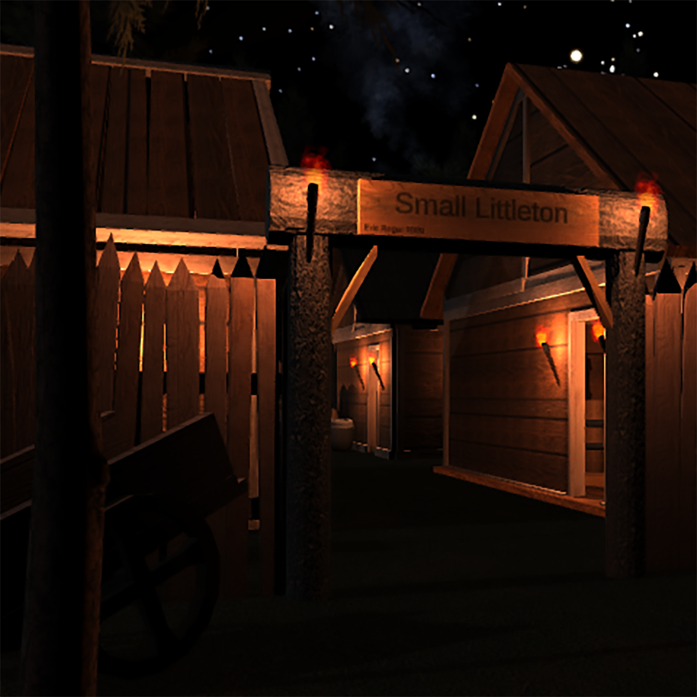

The assignment was to develop a 3D environment using some free kits from the Unity Asset Store. I came across this pack on the Unity Asset Store and I had a clear vision of how things could look. I got to work right away, trying to craft a story for this digital town! It took some learning, but I was proud of how it turned out. I learned about lighting and how to really set the scene of an environment. This type of world creation is something I will very likely use in the future as a way to conceptualize a world design before I head into 3D software and construct the world by hand!
Program Used: 
Date Completed: 2020/12/15
